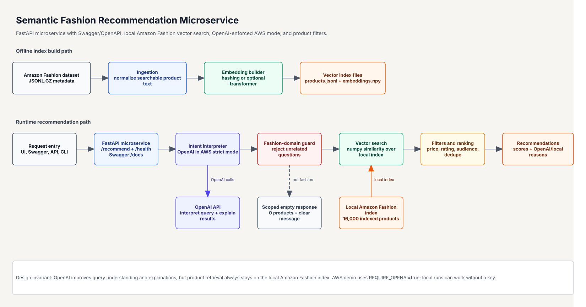
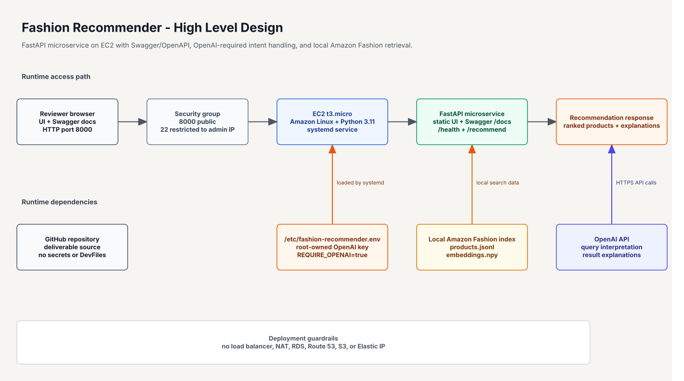
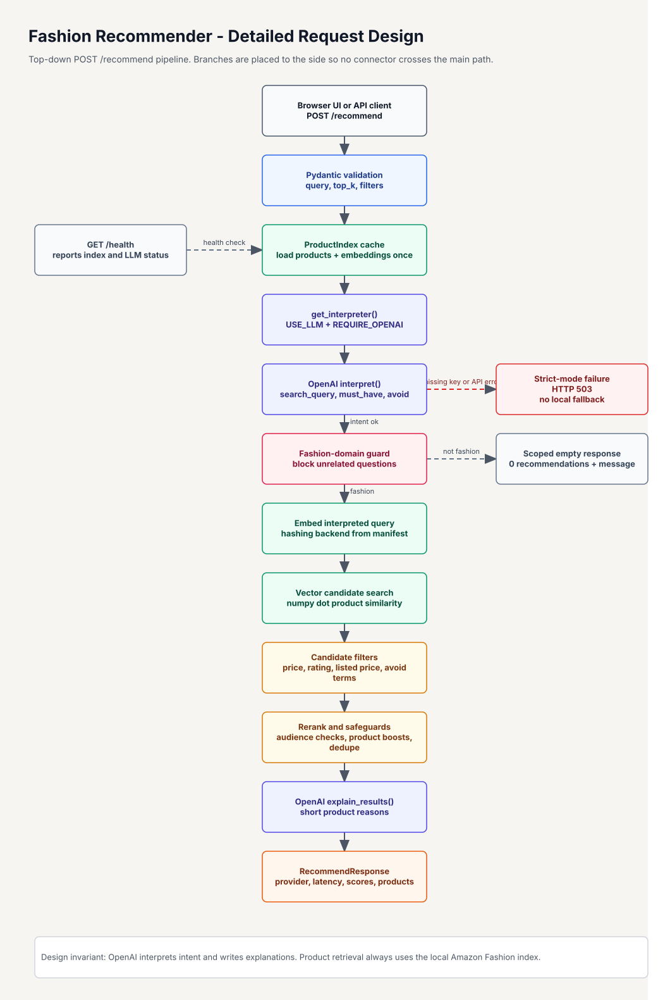

What This Project Delivers
GitHub also renders the repository README.md as the primary reviewer-facing documentation page.
| Assessment ask | Implementation |
|---|---|
| Parse natural-language queries | OpenAI query interpreter in hosted mode; local deterministic interpreter for offline use. |
| Recommend products from the dataset | Local vector search over a 16,000-product Amazon Fashion index. |
| Expose the service | FastAPI microservice with Swagger/OpenAPI docs, CLI command, and browser demo UI. |
| Architecture diagram | docs/architecture.pdf plus editable Draw.io diagrams. |
| README and design explanation | Reviewer-facing setup, usage, design decisions, trade-offs, tests, and deployment notes. |
Runtime Flow
1. RequestBrowser UI, Swagger UI, API client, or CLI sends a fashion shopping query.
2. InterpretOpenAI rewrites the request into compact fashion search intent in AWS strict mode.
3. GuardUnrelated questions are rejected before vector search.
4. SearchThe app searches local Amazon Fashion embeddings with numpy similarity.
5. RankFilters, audience checks, dedupe, and explanations produce the final recommendations.
Key Design Points
Dataset stays localOpenAI does not search the web or replace the dataset. Every product result comes from
data/index.Strict hosted modeAWS runs with
REQUIRE_OPENAI=true. Missing credentials or OpenAI failures return HTTP 503.Reviewable microserviceFastAPI, Swagger/OpenAPI, file-based vectors, and numpy keep the implementation compact and easy to inspect.
Quick Start
python -m venv .venv
.\.venv\Scripts\python -m pip install --upgrade pip
.\.venv\Scripts\pip install -r requirements.txt
.\.venv\Scripts\uvicorn app.main:app --reload --port 8000Open http://127.0.0.1:8000 to use the local UI. Open http://127.0.0.1:8000/docs for Swagger API documentation.
Sample API Request
curl -X POST http://127.0.0.1:8000/recommend \
-H "Content-Type: application/json" \
-d '{"query":"what should I wear to a beach wedding","top_k":5,"filters":{"require_price":true}}'Documentation Files
The diagrams below are exported from the cleaned Draw.io source files. They use straight connectors and grid-aligned blocks.
Architecture

High-Level Design

Detailed Request Design

{kind=link}
{kind=link}
{kind=link}
Validation
The test suite covers ingestion, API behavior, OpenAI-required strict mode, search relevance, filters, audience handling, and supported fashion query criteria.
pytest
50 passed